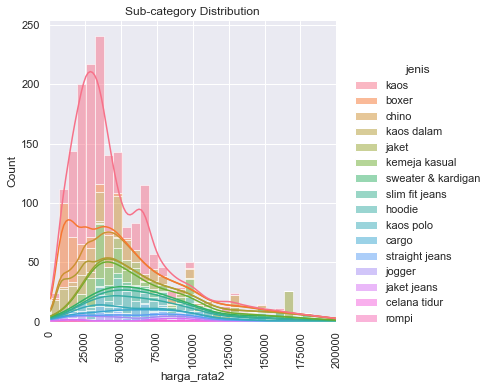
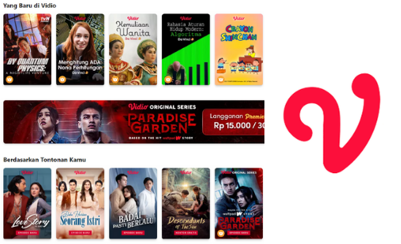
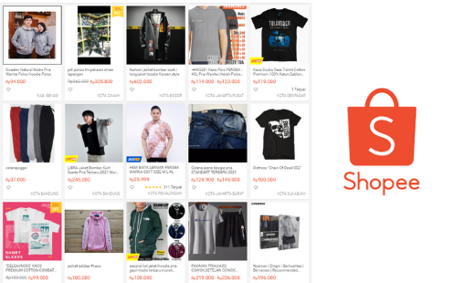
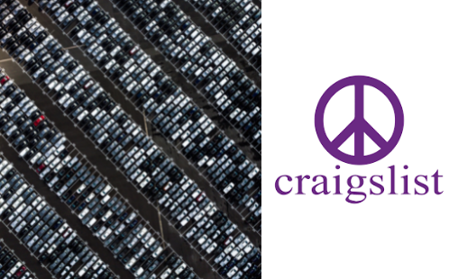

The main idea of this projects is to simplify administration process in indonesia using existing id card. This idea comes up cause there are complicated administration process in Indonesia especially in the state administrative affairs for civilians. So here I am designed the ID card detection and Optical Character Recognition (OCR) to its able to detect and record the information into csv file using camera.


One of insights from the analytis using real Vidio.com play dataset from 1 february 2020 to 16 february 2020 is most play are in embed (not direct) with less play duration, play by non premium users coming from some refferers and campaigns. It shows there are still many opportunities to attract non-premium users to become premium users. In the build recommendation system I am using collaborative filtering method using K-Nearest Neighbors algorithm and completed play data by premium user.

This projects idea based on customers and seller responses about regulatory delivery system change by Shopee Indonesia in their e-commerce system who encourage some of the users to switch the platform. The main idea is to get a bigger picture of the man's fashion market in Shopee Indonesia and compare it with another e-commerce platform to see the market opportunity within the same category.

In this project, I am designing a machine learning regression model to able to predict used car prices according to Craiglist website data. So the seller can estimate their used car price based on car specifications and condition. The final result of this project is a simple website API so user can use directly in website to predict their used car.
Here I am using a dataset about airline services, the dataset contains an Airline Satisfaction Passenger survey from the Kaggle website. The purpose of this analysis is to get an insight into what factors are highly correlated to a satisfied (or dissatisfied) passenger, and also can the data predict passenger satisfaction.

I am processing the e-commerce transaction data from the newcomer's e-commerce platform to get some insights into the business. An example of the insights is the fact that transactions mostly happened between 10 am to 15 pm, therefore the company can make some data-driven decisions like marketing campaigns in that range of time. cause in this project focusing on data analytics, so the final output of this project is Power BI dashboard to be able to share some insights to all stakeholders in the business.